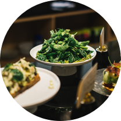
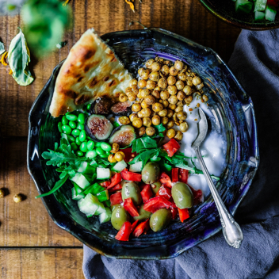
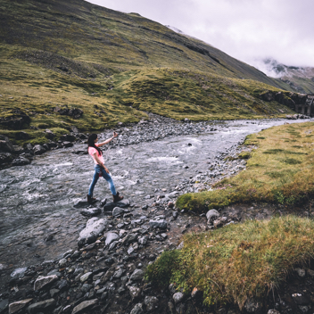
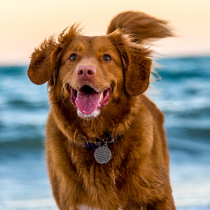
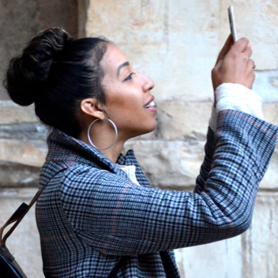
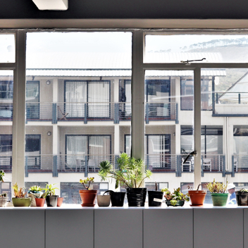
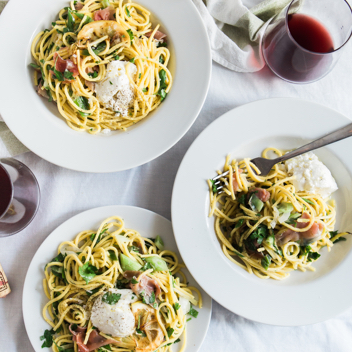
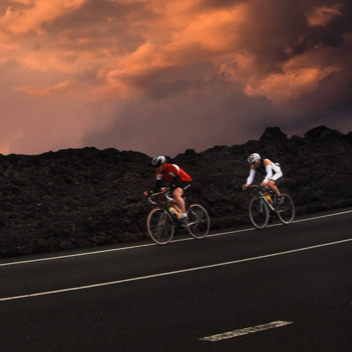
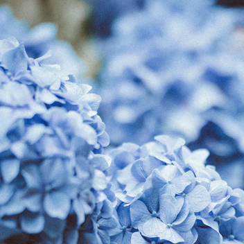
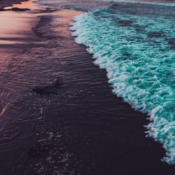

Billy Jean
Follow
74 pictures
1204 followers
1002 following

My fav salad

A quick selfie

Hey there Brown Dog!

I'll capture it

What a view!!

Lunch with friends

Marathon prep

Blue my favourite color

Take me back